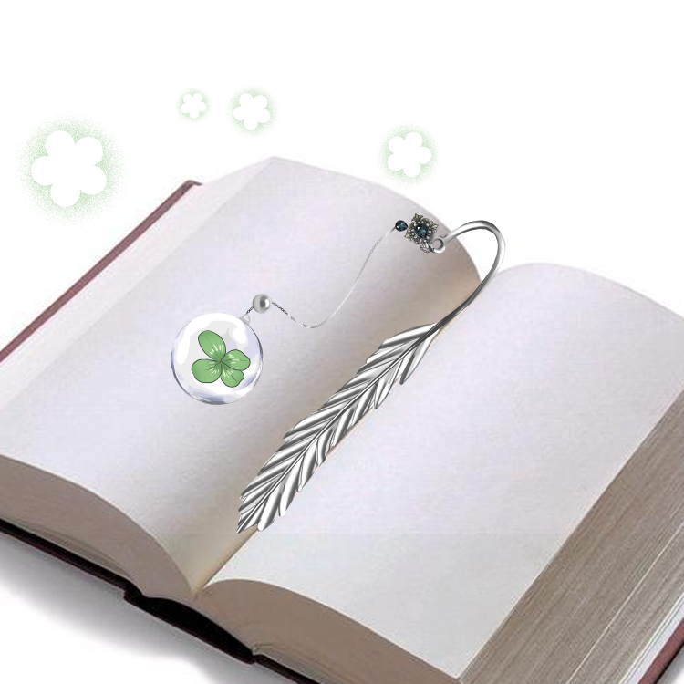
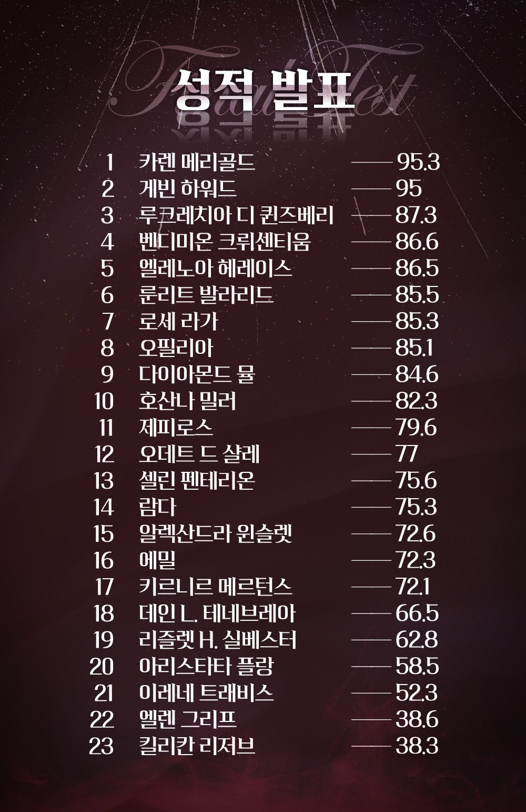
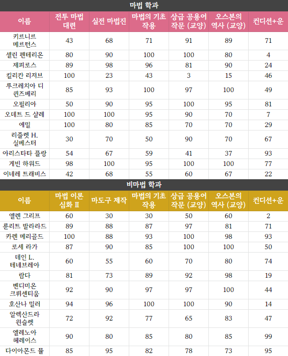
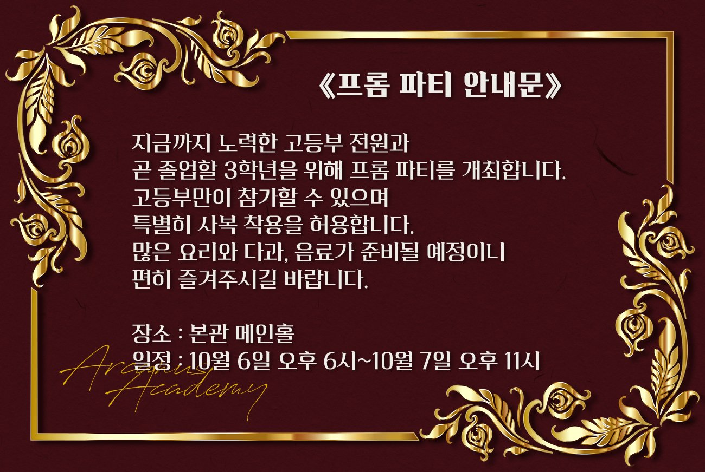

#2화 네 잎 클로버2022.10.04. 트윗게시일
기숙사 뒤 화단
검은 망토를 입은 한 남자가 흐드러지게 핀 꽃들을 파헤치고 있었다. 킬리칸이었다. 킬리칸은 뭔가를 찾는 듯 모종삽으로 흙을 푹푹 파면서 투덜거린다.
 "아 나~~더럽게 안 보이네. 쳇."
"아 나~~더럽게 안 보이네. 쳇."
그런 킬리칸의 모습을 아카데미를 산책하던 카렌이 저멀리서 발견한다. 반가움에 총총 걸어와봤으나 가까이 다가와도 눈치를 채지 못하는 킬리칸의 모습에 카렌은 뒤에서 대뜸 말을 건다.
 "무얼 그리 찾고 있나요~?"
"무얼 그리 찾고 있나요~?"
 "으앗 깜짝이야?! 메리골드?"
"으앗 깜짝이야?! 메리골드?"
놀랐는지 몸을 움찔 거린 킬리칸은 머쓱한 표정으로 흙투성이가 된 손을 탈탈 털고 일어난다. 뭘 찾고 있냐는 말에 괜히 민망스러워서 산처럼 쌓인 세잎 클로버를 몸으로 슬쩍 가린다.
 "그닥 ...찾는 거 없는데? 근데 여긴 어쩐 일이야? 산책?"
"그닥 ...찾는 거 없는데? 근데 여긴 어쩐 일이야? 산책?"
 "맞아요, 산책 중이었답니다~ 무슨 일이기에 이렇게 궁금하게 만드는거죠?"
"맞아요, 산책 중이었답니다~ 무슨 일이기에 이렇게 궁금하게 만드는거죠?"
킬리칸의 커다란 몸으로 가려진 게 뭔지 보려는 듯 몸을 그쪽으로 기울이다 킬리칸의 말의 모순을 캐치하고는 역으로 질문한다.
 "손을 흙으로 더럽히면서 아무것도 찾지 않았다는 말인가요...?"
"손을 흙으로 더럽히면서 아무것도 찾지 않았다는 말인가요...?"
카렌의 말에 킬리칸은 그제야 흙투성이가 된 제 손을 내려다 보았다. 눈에 훤히 보이는 거짓말에 식은땀이 삐질 새나온다. 아직 들키면 안되는데.. 곤란한 얼굴로 뒤를 보려는 네 움직임에 맞춰 몸을 움직여 계속 클로버들을 가린다
 "흙으로 더러워진 건.. 그냥 꽃 구경하다 넘어져서 그래. "
"흙으로 더러워진 건.. 그냥 꽃 구경하다 넘어져서 그래. "
 "넘어졌다구요...? 다치지는 않았나 보군요."
"넘어졌다구요...? 다치지는 않았나 보군요."
넘어졌다는 말에 걱정도 잠시, 킬리칸이 곤란해 하는 모습에 카렌은 묘한 즐거움을 느끼며 어깨를 으쓱인다.
 "고작 넘어진 것 가지고 다치진 않지. 몸 건강 하나는 누구한테도 지지 않을 걸? "
"고작 넘어진 것 가지고 다치진 않지. 몸 건강 하나는 누구한테도 지지 않을 걸? "
킬리칸은 둘러댈 변명거리를 생각하며 머리를 핑핑 돌리다 마침 이곳이 화단이라는 점을 이용해서 즉석으로 거짓말을 지어낸다
 "왜, 너한테 꽃 판다고 했잖아. 그래서 뭐 좋은 꽃 있나 살펴보고 있었는데 근데 여기 화단에 꽃들은 상태가 영~ 안 좋아서. 안 그래도 다른 곳으로 가려던 참이었거든? 영애가 궁금해할 만한 건 해소됐지? 그러니까 하던 산책 계속해. 별일 아니니까."
"왜, 너한테 꽃 판다고 했잖아. 그래서 뭐 좋은 꽃 있나 살펴보고 있었는데 근데 여기 화단에 꽃들은 상태가 영~ 안 좋아서. 안 그래도 다른 곳으로 가려던 참이었거든? 영애가 궁금해할 만한 건 해소됐지? 그러니까 하던 산책 계속해. 별일 아니니까."
 "꽃인가요~ 하지만 여기 어딜 봐도 리저브가 주었던 꽃다발보다 예쁜 꽃은 보이지 않는걸요~? 그런 말로 속일 수 있을 거라고 생각했나요."
"꽃인가요~ 하지만 여기 어딜 봐도 리저브가 주었던 꽃다발보다 예쁜 꽃은 보이지 않는걸요~? 그런 말로 속일 수 있을 거라고 생각했나요."
눈치가 빠른 카렌에게 킬리칸의 서툰 변명은 통하지 않았다. 킬리칸은 또 뭐라고 둘러대야할지 고민하고 있었는데 그의 흙투성이 손을 빤히 바라보던 카렌은 킬리칸의 손에 귀여운 분홍색 손수건을 쥐어준다.
다른 생각을 하고 있던 킬리칸은 갑자기 손에 분홍색 손수건이 쥐여지자 눈을 깜빡거리며 손수건을 바라본다.
 "뭐야 이게? 손수건 자랑? 어 이쁘네."
"뭐야 이게? 손수건 자랑? 어 이쁘네."
그리고 그대로 카렌에게 다시 돌려주려고 손수건을 내밀었다. 그 모습이 불만이었는지 카렌은 눈썹을 들썩이곤 네 손을 쥐어 흙을 박박 닦아낸다.
 "손수건이라는건 이런 용도로 사용하는 거랍니다? 자랑이 아니라요~!"
"손수건이라는건 이런 용도로 사용하는 거랍니다? 자랑이 아니라요~!"
카렌의 말을 들으며 그 때 준 꽃다발이 마음에 들었구나.. 생각하며 흐뭇한 미소를 짓고 있었는데 갑자기 손이 잡히곤 부드러운 손수건으로 제 손에 묻은 흙을 박박 닦아주는 카렌에게 킬리칸은 당황한다
 "잠깐, 손수건 더러워지잖아. 난 이거 살 돈 없는데."
"잠깐, 손수건 더러워지잖아. 난 이거 살 돈 없는데."
고급 원단으로 만들었는지 손에 닿는 감촉이 상상 이상으로 부드러워서 킬리칸의 눈이 조금 커졌다. 이런 비싼 손수건으로 흙 묻은 손을 닦아도 되는지 확신이 안 서서 손을 뺄까 고민하고 있었는데 손수건 사이로 카렌의 손가락이 스치자 몸이 절로 굳는다. 잠깐 머리가 정지한 사이 흙을 다 닦았는지 손수건이 떨어지자 그제야 머쓱하게 손을 치운다. 신경이 쓰이는지 더러워진 손수건을 힐끔거리며 바라본다.
 "누가 사라고 하던가요~? 그런 강매는 하지 않아요! 손수건은 원래 저보다는 다른 이들을 위해 쓸데가 많기도 하구요. 이 정도면 흙을 파낸 수준이 아닌가요...?"
"누가 사라고 하던가요~? 그런 강매는 하지 않아요! 손수건은 원래 저보다는 다른 이들을 위해 쓸데가 많기도 하구요. 이 정도면 흙을 파낸 수준이 아닌가요...?"
카렌은 킬리칸의 손을 적당히 닦아낸 후에 흙 묻은 부위를 안쪽으로 가게 접어 넣고는 킬리칸을 관찰하듯 바라보았다.
 "넘어져서 묻은 흙이라면 다시 흙을 묻힐 일이 없겠지요~ 자꾸 보내려 하니 이번엔 물러나겠어요."
"넘어져서 묻은 흙이라면 다시 흙을 묻힐 일이 없겠지요~ 자꾸 보내려 하니 이번엔 물러나겠어요."
카렌은 그렇게 말한 후 눈만 빙긋 웃었다. 속으로 가는 척 킬리칸을 염탐할 생각 중인 듯 했다. 하지만 킬리칸은 그런 카렌의 속마음을 눈치채지 못했다. 조금 느리게 킬리칸이 고개를 끄덕인다.
 "어..이제 흙 다시 묻을 일 없을 거야. 산책 잘 하고. 나중에 보자고."
"어..이제 흙 다시 묻을 일 없을 거야. 산책 잘 하고. 나중에 보자고."
 "네에, 하던 일 성공적으로 끝나길 바랄게요~"
"네에, 하던 일 성공적으로 끝나길 바랄게요~"
무슨 일이라고 치사하게... 카렌은 떠밀듯 보내는 킬리칸에게 보여주듯 뒤를 돌아 복도로 걸음을 향했다. 카렌이 정말 다른 곳으로 가는 걸 보고는 킬리칸은 다시 화단에 쭈구려 앉아 네잎클로버를 열심히 찾기 시작했다. 킬리칸의 시선이 완전히 화단으로 돌아간 것을 곁눈질로 확인한 카렌은 갈고닦은 염탐실력으로 시야가 트인 풀숲에 몸을 숨긴다. 그리곤 빼꼼 풀 위로 분홍눈을 반짝이며 킬리칸을 바라보았다. 염탐 당하고 있을 거라곤 전혀 모르는 모습으로 다시 흙을 파내면서 '네잎 클로버'를 찾는 킬리칸을 보자 기껏 닦아준 손이 다시 더러워지는걸 보며 떨떠름해짐을 느낀다.
 ' .. 네잎클로버...? 행운, 시험... 정말 시험때문에 저렇게까지? 도무지 숨긴 이유를 모르겠네..'
' .. 네잎클로버...? 행운, 시험... 정말 시험때문에 저렇게까지? 도무지 숨긴 이유를 모르겠네..'
카렌이 의아함을 안고 화단 인근을 떠났다. 근처를 지나가던 룬리트가 고개를 갸웃거리며 킬리칸에게 다가오고 화단에서 몸을 웅크린 채 여전히 네잎 클로버를 찾고있는 킬리칸에게 말을 건다
 "킬리칸, 뭐 잃어버렸나? 나, 오면서 주운 거 있어."
"킬리칸, 뭐 잃어버렸나? 나, 오면서 주운 거 있어."
낯익은 목소리가 들리자 킬리칸이 흘깃 룬리트를 올려다 본다. 주머니를 뒤진 룬리트는 한 쪽지를 킬리칸에게 건넨다. 그 쪽지에는 '양심' 이라고 적혀있다.
 "이거, 킬리칸 거?"
"이거, 킬리칸 거?"
룬리트가 내민 쪽지의 글자를 가자미눈으로 째려보던 킬리칸은 한숨을 쭉 내쉬고 흙 묻은 손으로 대충 쪽지를 건네받은 후 주머니에 마구 쑤셔 넣는다. 그 후 룬리트의 손에 모종삽을 턱 얹고 입을 연다.
 "찾아라. 이곳에서. 클로버. 네 잎."
"찾아라. 이곳에서. 클로버. 네 잎."
굉장히 딱딱하고 어색한 말투였다. 일부러 그렇게 말하곤 킬리칸은 이죽거리는 미소로 룬리트를 바라보았다. 아마 옛날의 말에 서툴었던 룬리트를 흉내내는 듯 했다. 하지만 룬리트는 킬리칸의 놀림에 전혀 타격받지 않은 얼굴로 쪽지를 챙긴 킬리칸을 장하게 바라본다.
 "응."
"응."
모종삽을 들고 쪼그려 앉은 룬리트는 갑자기 킬리칸의 발등을 툭툭 친다.
 "뭐야? 내 발은 네잎 클로버가 아니라고."
"뭐야? 내 발은 네잎 클로버가 아니라고."
킬리칸은 룬리트의 기상천외한 행동에 어느정도 익숙해져있었기에 가볍게 말한 후 무시하려 했으나... 찾으라는 네잎 클로버는 안 찾고 자신의 발등만 치고 있는 모습에 결국 짜증을 내며 돌아본다.
 "아!! 왜 자꾸 치는데! 찾기 싫다! 이거냐?! 평민의 바보같은 놀이에 유치해서 동참을 못 하겠다?!"
"아!! 왜 자꾸 치는데! 찾기 싫다! 이거냐?! 평민의 바보같은 놀이에 유치해서 동참을 못 하겠다?!"
룬리트는 벌떡 일어나 성질을 내는 킬리칸을 멀뚱히 쳐다보았다. 그리고 킬리칸이 성질을 내든 말든 그의 발 아래로 시선을 돌렸다. 룬리트는 무언가를 줍고는 성 내는 킬리칸의 손에 그것을 올려놓았다. 킬리칸이 벌떡 일어나 성을 내느라 실컷 짓이겨진 불쌍한 클로버가 있었다.
 "네 잎 토끼풀."
"네 잎 토끼풀."
킬리칸은 제 손에 얹어진 짓이겨진 네잎 클로버를 보고 눈을 휘둥그레 뜬다.
 "어??? 으악!! 진짜잖아!!!!!"
"어??? 으악!! 진짜잖아!!!!!"
비록 네잎 클로버는 사정없이 짓이겨져 있었지만... 거의 몇 시간 내내 쪼그려앉아 다리가 저리도록 애타게 찾아왔던 것이기에 그런 것과는 상관없이 킬리칸은 굉장히 기쁜 표정을 지었다. 손으로 조심조심 네잎 클로버가 찢어지지 않게 펴본다. 모양은 그나마... 유지되어 있긴 하다. 이정도면 킬리칸의 손재주로 나름 복원이 가능할 것이다.
 "너.. 눈썰미가 제법인데? 근데 좀 빨리 말해주지 그랬냐."
"너.. 눈썰미가 제법인데? 근데 좀 빨리 말해주지 그랬냐."
항상 머쓱하면 툴툴대는 것이 그의 버릇이었기에 다른 이었다면 도와줬는데 그게 무슨 태도냐며 화를 냈을지도 모르겠다. 하지만 킬리칸은 상대가 화를 내건 말건 그다지 태도를 바꾸는 남자는 아니었기에 뻔뻔하게 말을 이었다.
 "어쨌든 뭐... 덕분에 찾았네. 가지고 싶은 건 아니지? 하나밖에 없다 이거."
"어쨌든 뭐... 덕분에 찾았네. 가지고 싶은 건 아니지? 하나밖에 없다 이거."
룬리트는 소리를 빡 지르는 킬리칸의 만행(?)에 놀라 땅바닥에 떨어트린 모종삽을 킬리칸이 평민이 준 거라 땅에 던져 놓은 거냐고 하기 전에 얼른 다시 줍고는 고개를 끄덕이며 대답했다.
 "너 가져. 네 행운이다."
"너 가져. 네 행운이다."
그리고 또 악의 없는 표정으로 덧붙인다.
 "네 행운, 네가 짓밟았다."
"네 행운, 네가 짓밟았다."
악의 없이 덧붙여진 얄미운 말에 킬리칸의 미간이 찌푸려졌다. 발끈한 듯 다시 외친다.
 "행운 안 짓밟혔어!! 잘 펴면 괜찮거든??? "
"행운 안 짓밟혔어!! 잘 펴면 괜찮거든??? "
그러고는 제 손의 네잎 클로버를 소중히 감싸면서 약간 부끄러운 듯 들릴 듯 말듯 한 목소리로 중얼거린다.
 "...어쨌든 찾게 해 준 건 고맙다."
"...어쨌든 찾게 해 준 건 고맙다."
민망한지 약간 발그레진 얼굴을 홱 돌리고는 다른 곳을 보며 말을 잇는다.
 "나중에 내가 맛있는 거라도 쌔벼줄게. 그럼, 나 바빠서 이만 가본다?"
"나중에 내가 맛있는 거라도 쌔벼줄게. 그럼, 나 바빠서 이만 가본다?"
네잎 클로버를 소중히 품에 안은 채로 룬리트의 대답이 돌아오기도 전에 킬리칸은 등을 돌리고 어딘가로 급하게 돌아간다. 쌔벼....? 쌔빈다는 말이 뭘까 생각한다. 룬리트는 덩그러니 남겨져 킬리칸의 뒤통수를 바라보다 뒤늦게 손에 들린 모종삽을 바라본다
 "아."
"아."
나중에 줘야 겠다.... 룬리트는 모종삽을 쥐지 않은 다른 빈 손으로 멀어져가는 킬리칸의 등을 향해 잘 가라고 손을 흔들었다.
그리고 기숙사 방에 도착한 킬리칸은 룬리트가 찾아준 네잎클로버를 소중히 펼치면서 방을 잔뜩 어지럽히며 뭔가를 뚝딱뚝딱 만들어본다. 시간 내로 만들 수 있을지 모르겠지만.... 그래도 마음 속에 누군가를 떠올리며 열심히 손을 조물조물거렸다. 얇은 쇠를 불마법으로 달군 후 굽히고 동그란 유리구슬을 꺼내 불로 구멍을 뚫어 그 안에 열심히 편 네잎클로버를 넣는다. 그 유리구슬을 가는 체인으로 연결하자....그럴싸한 책갈피가 만들어진다.
 "아직 실력이 녹슬진 않았네."
"아직 실력이 녹슬진 않았네."
킬리칸은 어린 시절, 친하게 지내던 장사꾼 아저씨한테 배운 기술을 아직도 잊지 않아 다행이라고 생각했다. 나름 예쁘게 만들어진 책갈피를 망토에 넣고 걸음을 옮겨 샤비의 상점으로 향한다. 그리고 킬리칸이 평소에는 거들떠도 보지 않았던 서적 코너를 한참 기웃거리다 책 몇 권을 집어 스르르 넘겨본다. 킬리칸은 빈곤한 생활때문에 글을 늦게 뗐었다. 그래서 긴 글을 읽는 것에는 시간이 다소 소요되었는데 집었던 책들 중 그 중 그나마 문단 하나하나가 짤막한 시집 한 권을 발견한다. 그리고 그 내용이 마음에 들었는지 그걸 계산한다. 상점을 나서니 벌써 해가 기웃기웃 지는 시간이었다. 성적 발표 시간이 멀지 않았기에 킬리칸은 시집 안에 책갈피를 끼우고는 빠른 걸음으로 본관 1층으로 향한다.
이미 본관 1층에는 모두가 삼삼오오 모여 성적표가 걸리길 기다리고 있었다. 그 안에서 여유로운 표정을 짓고있는 카렌을 발견하고 킬리칸이 거침없이 다가갔다.
 "메리골드"
"메리골드"
킬리칸은 제 목소리를 듣고 고개를 돌린 카렌을 보며 능청스럽게 말을 이었다.
 "시험은 잘 봤나 보지? 곧 성적 나온다던데 여유로워 보이네"
"시험은 잘 봤나 보지? 곧 성적 나온다던데 여유로워 보이네"
킬리칸의 말에 카렌은 가만히 미소짓는다.
 "어머, 글쎄...늘 보던대로 보지 않았을까 싶어요~ 점수가 어떻든 받아들여야겠죠. 그건 그렇고... "
"어머, 글쎄...늘 보던대로 보지 않았을까 싶어요~ 점수가 어떻든 받아들여야겠죠. 그건 그렇고... "
조곤조곤 말하던 카렌은 곧이어 킬리칸을 향해 장난스런 시선을 던지며 조금 짓궃은 표정을 지어낸다.
 "혹시 리저브가 꼴등을 예약했나요? 그런 이야기를 에밀이 하던걸요~?"
"혹시 리저브가 꼴등을 예약했나요? 그런 이야기를 에밀이 하던걸요~?"
카렌의 장난스러운 말에 킬리칸은 눈을 가늘게 뜨고 혀를 찼다
 "쳇, 에밀 녀석 쓸데없는 말을 하고 다니는군. 그래도 행운 포션을 먹었기 때문에 평소보다 성적이 잘 나올 거라고. 그나저나 늘 보던 대로 봤으면 걱정되겠네?"
"쳇, 에밀 녀석 쓸데없는 말을 하고 다니는군. 그래도 행운 포션을 먹었기 때문에 평소보다 성적이 잘 나올 거라고. 그나저나 늘 보던 대로 봤으면 걱정되겠네?"
킬리칸은 제 성적뿐만 아니라 남의 성적에도 그다지 큰 관심이 없었다. 그러므로 당연히 카렌의 상위권 성적을 모를 수밖에. 킬리칸은 약간 어색한 손짓으로 제 망토 안에 손을 넣었다. 그러고는 안쪽 주머니에서 시집을 꺼내 카렌에게 건네주었다. 카렌은 얼떨결에 시집을 받아들곤 어리둥절한 낯으로 킬리칸을 쳐다보았다.
 "저는 성적에 대해 걱정을 해본적이 없는... 음~? 이게 왠 시집인가요~?"
"저는 성적에 대해 걱정을 해본적이 없는... 음~? 이게 왠 시집인가요~?"
카렌의 물음에 킬리칸은 잠시 입을 달싹이다가 뻔뻔하게 나가기로 했다.
 "손수건 답례야.길가다가 우연히 네잎클로버를 발견해서 좀 상품화시켜봤지."
"손수건 답례야.길가다가 우연히 네잎클로버를 발견해서 좀 상품화시켜봤지."
제 거짓말이 들킬까봐 킬리칸은 부러 태연한 표정을 가장하고 말을 잇는다.
 "네잎클로버는 받는 사람한테 행운을 준다면서? 시험 성적 잘 나왔으면 좋겠네."
"네잎클로버는 받는 사람한테 행운을 준다면서? 시험 성적 잘 나왔으면 좋겠네."

펼쳐진 시집 사이에 자리잡아있는 네잎 클로버 책갈피를 카렌이 가만히 내려본다. 카렌은 낮에 보았던 킬리칸의 모습을 떠올렸다.
 '흙투성이 손을 하곤 무언가 열심히 숨기면서도 네잎 클로버를 찾던게... 이걸 만들기 위해서였나?'
'흙투성이 손을 하곤 무언가 열심히 숨기면서도 네잎 클로버를 찾던게... 이걸 만들기 위해서였나?'
킬리칸의 거짓말은 이미 카렌에게 모두 탄로났지만 정성스런 선물은 원래 기쁜 법이라. 카렌은 시집을 품에 안아들며 화사한 미소를 걸친다.
 "고마워요~?"
"고마워요~?"
카렌의 미소에 바라본 킬리칸은 약간 눈을 크게 뜨고 바라보다 입을 꾹 다물었다. 그러고는 가만히 그의 붉은 눈동자는 카렌의 웃는 모습을 우두커니 바라보았다. 잠깐의 침묵이 지난 후, 킬리칸이 뭔가 입을 열려는 그 순긴이었다.
마법 학과 교수 중 한 명이 걸어오는 모습에 성적을 기다리던 아이들의 소란스러움이 커진다. 교수가 마법을 영창하니 옆구리에 끼고 있던 넓은 종이가 알림판으로 날아가 붙었다. 성적등수표였다. 자연스레 카렌과 킬리칸의 시선도 그곳을 향한다.


카렌의 성적은 등수표의 가장 상단에 있었다. 놀라워하는 학생들의 시선이 카렌에게로 향한다. 킬리칸 또한 흐뭇한 미소를 지으며 친구들 사이에서 축하를 받는 카렌을 바라보다가 문득 자신의 등수가 궁금하여 등수표를 위에서 아래로 훑어본다... 그리고 자신의 등수는.....
등수표 가장 아래에서 발견할 수 있었다.
 "하?"
"하?"
믿을 수 없어 킬리칸은 제 눈을 손으로 부비적거렸다. 하지만 다시봐도 등수표 최하단에 위치한 자신의 등수가 달라지는 건 아니었다. 어째서? 킬리칸의 머릿속은 의문으로 가득찼다. 분명 어제 샤비가 깜짝 한정판매를 했던 시험 점수가 잘 나오게 해준다는 행운물약을 사서 원샷했을터인데. 몇 번을 봐도 믿을 수가 없어 입만 떡 벌리고 있다가... 킬리칸은 소리질렀다.
 "샤비!!!!!! 돈 환불해줘!!!!!!! 행운 물약 효과 없잖아!!!!!!! "
"샤비!!!!!! 돈 환불해줘!!!!!!! 행운 물약 효과 없잖아!!!!!!! "
본관 1층에선 킬리칸의 허무한 소리만 울려퍼졌다. 내가 그걸 사려고 몇 코인이나 썼는데...! 킬리칸은 잔뜩 성이 난 채 씩씩거리며 몇 번이나 분에 찬 소리를 질렀다. 그리고 어느정도 시간이 지난 후.... 허무한 표정으로 벤치에 앉아 성적표를 바라보고 있는 킬리칸에게 카렌이 다가왔다.
 "리저브~?"
"리저브~?"
살랑살랑 들려오는 고운 목소리에 꺾여있던 고개가 위로 움직였다. 약간 미소를 지은 카렌을 보자 킬리칸은 제 성적표를 망토 안에 쑤셔넣었다. 어차피 등수와 공개 성적표가 알림판에 떡하니 붙어있었기에 제 성적을 이미 카렌 또한 알고있겠지만서도. 카렌은 킬리칸 앞에 시집을 꺼내들며 살짝 흔들었다. 딸랑거리며 시집 가운데에 꽂혀있던 네잎클로버 장식이 흔들거린다.
 "이것 덕분인지 리저브의 행운마저 제게 넘겨버린 것 같은 놀라운 성적을 받아버렸네요."
"이것 덕분인지 리저브의 행운마저 제게 넘겨버린 것 같은 놀라운 성적을 받아버렸네요."
방긋 웃음 짓는 카렌을 보자 킬리칸은 아까의 등수가 다시금 떠올랐다. 전교 1등, 카렌 메리골드... 그리고 전교 꼴등, 킬리칸 리저브. 그걸 다시금 떠올리자 아무래도 작은 심술이 삐죽 튀어나올 수 밖에 없었다
 "그러게 네 성적이 그렇게 잘 나오는 줄 알았으면 그냥 내가 가지고 있을 걸 그랬는데 말이야."
"그러게 네 성적이 그렇게 잘 나오는 줄 알았으면 그냥 내가 가지고 있을 걸 그랬는데 말이야."
누가 들어도 억울함을 듬뿍 담고 있는 킬리칸의 목소리에 카렌이 괜스레 입꼬리를 말아 올린다. 제 등수를 다시금 떠올리자 울적해진 킬리칸이 깊게 한숨을 내쉬자 카렌이 고개를 살며시 기울이며 그런 킬리칸을 바라본다
 "후후, 네잎클로버는 찾기도 무척 어렵잖아요~ 아무래도 손수건에 비해 너무 과분한게 아닌가 싶은 기분이예요... 혹시 제게 바라는게 있나요?"
"후후, 네잎클로버는 찾기도 무척 어렵잖아요~ 아무래도 손수건에 비해 너무 과분한게 아닌가 싶은 기분이예요... 혹시 제게 바라는게 있나요?"
바라는 게 있냐며 묻는 카렌의 모습에 킬리칸은 눈을 동그랗게 뜬다. 그 말을 듣는 순간 머리 속에 그녀에게 바라는 것이 바로 스쳐지나갔으나... 킬리칸은 뭔가를 생각하곤 망설이듯 어물쩍 눈을 피하다가 입을 어렵사리 연다
 ".....메리골드, 너 종종 티타임을 가지는 것 같던데 "
".....메리골드, 너 종종 티타임을 가지는 것 같던데 "
말을 잠깐 끊었다가 숨을 들이 마시곤 다시 말을 이었다.
 "만약 오늘 낮에도 할 거면 나 좀 초대해줄래? 내가 그런 귀족문화를 당최 모르겠다보니 아무래도 좀 경험해보는 것도 나쁘지 않을 것 같아서."
"만약 오늘 낮에도 할 거면 나 좀 초대해줄래? 내가 그런 귀족문화를 당최 모르겠다보니 아무래도 좀 경험해보는 것도 나쁘지 않을 것 같아서."
킬리칸이 답지 않게 눈을 피하기에 어떤 바람일까 기대하던 카렌은 망설이듯 내뱉어진 킬리칸의 요청에 다소 의외인 듯 눈을 깜빡인다.
 "오, 티타임에 말인가요? 리저브가 귀족문화에 관심이 있을 줄은 몰랐어요~ 미리 알았다면 이것저것 알려드렸겠죠? 그리고 이런 일이 아니라도 그 정도의 부탁은 늘 환영이었을텐데~"
"오, 티타임에 말인가요? 리저브가 귀족문화에 관심이 있을 줄은 몰랐어요~ 미리 알았다면 이것저것 알려드렸겠죠? 그리고 이런 일이 아니라도 그 정도의 부탁은 늘 환영이었을텐데~"
카렌은 티타임의 손님이 생겨 기쁜 표정이었다. 킬리칸은 순수하게 기뻐하는 네 모습에 분위기를 맞춰 능글거리는 미소를 띠며 맞장구를 친다
 "나중에 불 마법사로 대성하면 귀족들을 접할 일이 더 많아질 테니 사전 연습이라고나 할까~ 그런 거지."
"나중에 불 마법사로 대성하면 귀족들을 접할 일이 더 많아질 테니 사전 연습이라고나 할까~ 그런 거지."
 "오, 그런가요~ 불 마법사로 대성한 뒤에도 저를 모른척 하면 안돼요~? "
"오, 그런가요~ 불 마법사로 대성한 뒤에도 저를 모른척 하면 안돼요~? "
부러 높은 목소리로 장난스런 경고를 던진 카렌은 잠깐 스케쥴을 생각하고는 싱긋 웃고 말을 잇는다.
 "리저브가 그걸로 괜찮다면 2시에 옥상 정원으로 올래요~? 좋아하는 향이나, 찻잎이 있다면 알려주는 것도 좋구요!"
"리저브가 그걸로 괜찮다면 2시에 옥상 정원으로 올래요~? 좋아하는 향이나, 찻잎이 있다면 알려주는 것도 좋구요!"
 "난 2시 좋아. 그리고 찻잎..?"
"난 2시 좋아. 그리고 찻잎..?"
킬리칸은 술이라면 모를까 차는 단 한번도 마셔본 적이 없었다. 그러므로 좋아하는 찻잎이 있을리가 없었다. 하지만 좋아하는 향이라면 있었다. 그는 괜히 카렌의 분홍 눈에 시선이 갔다.
 "찻잎은 모르겠고 좋아하는 향은.... 튤립이나 .. 장미..."
"찻잎은 모르겠고 좋아하는 향은.... 튤립이나 .. 장미..."
빤히 바라보는 킬리칸의 시선에 카렌은 눈만 몇번 깜박인다. 그러곤 툭 질문이 튀어나왔다.
 "리저브는 꽃 향을 좋아하나요~?"
"리저브는 꽃 향을 좋아하나요~?"
카렌의 질문에 킬리칸은 그제야 제정신이 돌아온 듯 물끄러미 바라보던 시선을 거두고는 헛기침을 한다.
 "뭐어, 싫어하진 않아. 하지만 꼭 그걸 원하는 건 아니니 없으면 전적으로 네 취향에 맞춰서 준비해 줘. 그럼 그 시간에 옥상정원에서 만나자고."
"뭐어, 싫어하진 않아. 하지만 꼭 그걸 원하는 건 아니니 없으면 전적으로 네 취향에 맞춰서 준비해 줘. 그럼 그 시간에 옥상정원에서 만나자고."
 "아쉽지만 튤립 차는 없으니 장미 차로 준비해둘게요! 그럼, 티타임을 준비하러 가야겠군요~ 네, 그때 뵈어요."
"아쉽지만 튤립 차는 없으니 장미 차로 준비해둘게요! 그럼, 티타임을 준비하러 가야겠군요~ 네, 그때 뵈어요."
카렌은 짧은 작별인사를 건네고는 뒤돌아 서려다 멈칫한다. 뭔가 놓고갔는지 고개를 갸웃거리는 킬리칸을 바라보며 생긋 웃었다.
 "시집이랑 네잎클로버 책갈피, 고마워요."
"시집이랑 네잎클로버 책갈피, 고마워요."
그렇게 한 마디를 던진 뒤 카렌은 걸음을 옮겨 킬리칸의 시야에서 사라진다. 그런 킬리칸의 뒤로 아까 미처 못 붙었던 안내장 하다가 마법의 바람에 의해 날아와 알림장에 턱 자리 잡는다.
